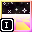

 Tails7 Background Gradient
1. General Description of Objects
The Tails7 External Background Gradient and Tails7 Internal Background Gradient objects are responsible for applying a gradient to the screen. They are used to create "atmosphere" and "fog" in the sky.
Differences between objects:
- Tails7 External Background Gradient – The gradient stretches upwards from the "shader horizon".
- Tails7 Internal Background Gradient – The gradient stretches downwards from the "shader horizon".
Both objects work in conjunction with Tails7 Render Ground (the object rendering the ground) and Tails7 Info Object (storing global parameters).
2. Variables
_Size
Type: Numeric parameter.
Function: Controls the gradient’s scale along the Y axis.
Default value:1.0
A larger _Size value results in a larger gradient height scale.
3. Behaviors
The main behavior is Mapping, which handles positioning, scaling, and layering.
3.1. Details: Mapping in Tails7 External Background Gradient
Animation Frame Settings
* AlwaysTails7 External Background Gradient:
Force animation frame to 1
Goal: Change the animation frame from icon to gradient texture.
Layer
* AlwaysTails7 External Background Gradient:
Move to layer 1Tails7 External Background Gradient:
Bring to back
Goal: Set the object to the first layer and place it behind everything else.
Scale
* AlwaysTails7 External Background Gradient:
Set X scale to Frame WidthTails7 External Background Gradient:
Set Y scale to ( YScale( "Tails7 Render Ground" ) / 16.0 ) * _Size( "Tails7 External Background Gradient" )
X scale: Width of the gradient matches the screen width.
Y scale: Height depends on the _Size parameter and the scale of "Tails7 Render Ground".
Position and Rotation
* AlwaysTails7 External Background Gradient:
Set Y position to Y( "Tails7 Center Pointer" ) + ( EffectParam( "Tails7 Render Ground", "_RotZ" ) * ( _RenderMinimumSize( "Tails7 Info Object" ) * ( 3.14159265 / 180.0 ) ) ) + ( ( ( EffectParam( "Tails7 Render Ground", "_Distortion" ) - 1.0 ) / ( EffectParam( "Tails7 Render Ground", "_Distortion" ) * 2.0 ) ) * _RenderMinimumSize( "Tails7 Info Object" ) )
Goal: Set the Y position of the gradient at the horizon level.
* Tails7 External Background Gradient: EffectParam( "Tails7 Render Ground", "_Distortion" ) > 0Tails7 External Background Gradient:
Set X position to 0
Tails7 External Background Gradient:
Set angle to 0 (Quality = 0)
X position: Left corner of the screen because X scale grows left to right.
Angle: Set to 0 to align the gradient from bottom to top via the action point.
* Tails7 External Background Gradient: EffectParam( "Tails7 Render Ground", "_Distortion" ) = 0Tails7 External Background Gradient:
Set X position to 2147483647
X position: Places the object off-screen to make it invisible.
* Tails7 External Background Gradient: EffectParam( "Tails7 Render Ground", "_Distortion" ) < 0Tails7 External Background Gradient:
Set X position to Frame Width
Tails7 External Background Gradient:
Set angle to Set angle to 180 (Quality = 0)
X position: Right corner of the screen.
Angle: Set to 180 to flip the gradient and reverse X scaling (right to left).
3.2. Details: Mapping in Tails7 Internal Background Gradient
Animation Frame Settings
* AlwaysTails7 Internal Background Gradient:
Force animation frame to 1
Goal: Change the animation frame from icon to gradient texture.
Layer
* AlwaysTails7 Internal Background Gradient:
Move to layer Layer("Tails7 Render Ground")Tails7 Internal Background Gradient:
Move in front of object Tails7 Render Ground
Goal: Place this object in the same layer as "Tails7 Render Ground" but in front of it and behind others.
Scale
* AlwaysTails7 Internal Background Gradient:
Set X scale to Frame WidthTails7 Internal Background Gradient:
Set Y scale to ( YScale( "Tails7 Render Ground" ) / 16.0 ) * _Size( "Tails7 Internal Background Gradient" )
X scale: Width of the gradient matches the screen width.
Y scale: Height depends on the _Size parameter and the scale of "Tails7 Render Ground".
Position and Rotation
* AlwaysTails7 Internal Background Gradient:
Set Y position to Y( "Tails7 Center Pointer" ) + ( EffectParam( "Tails7 Render Ground", "_RotZ" ) * ( _RenderMinimumSize( "Tails7 Info Object" ) * ( 3.14159265 / 180.0 ) ) ) + ( ( ( EffectParam( "Tails7 Render Ground", "_Distortion" ) - 1.0 ) / ( EffectParam( "Tails7 Render Ground", "_Distortion" ) * 2.0 ) ) * _RenderMinimumSize( "Tails7 Info Object" ) )
Goal: Set the Y position of the gradient at the horizon level.
* Tails7 Internal Background Gradient: EffectParam( "Tails7 Render Ground", "_Distortion" ) > 0Tails7 Internal Background Gradient:
Set X position to 0
Tails7 Internal Background Gradient:
Set angle to 0 (Quality = 0)
X position: Left corner of the screen.
Angle: Set to 0 so the gradient flows top to bottom.
* Tails7 Internal Background Gradient: EffectParam( "Tails7 Render Ground", "_Distortion" ) = 0Tails7 Internal Background Gradient:
Set X position to 2147483647
X position: Moves the object off-screen to hide it.
* Tails7 Internal Background Gradient: EffectParam( "Tails7 Render Ground", "_Distortion" ) < 0Tails7 Internal Background Gradient:
Set X position to Frame Width
Tails7 Internal Background Gradient:
Set angle to Set angle to 180 (Quality = 0)
X position: Right corner of the screen.
Angle: Rotated 180 degrees, gradient flows right to left.